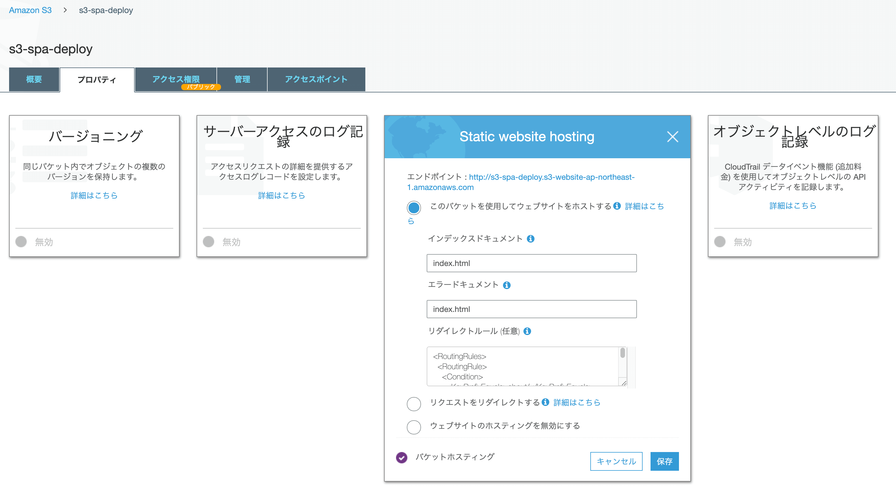

できる場合とできない場合があります。 SSR(つまり NodeJS での実行)するなら、当然 S3 単体ではできません。 Lambda@Edge が必要で、さらに Lambda をルーティングごとに実行させる口として CloudFront も必要です。
Static HTML Export での運用であれば、少し工夫をすれば CloudFront を使わずに S3 だけでもデプロイできるのでその解説をします。
NextJS は Static HTML Export 機能がある
NextJS は SSR を容易にしてくれる FW という印象がありますが、Static HTML Export 機能も備わっており、SSR の対象を事前に Rendering して静的ページを吐き出すことができます。 このページをホスティングすれば NodeJS 以外の環境でも NextJS を動かすことができます。
Static HTML Export 機能と S3 の相性が悪い
ただし、Static HTML Export ができるものの、NextJS の機能を使ってページ遷移をしていると、遷移の挙動は SPA 的なものになります。 つまり、 /about に遷移した時、HTML は静的ページですが URL のヘッダは /about.html になりません。 遷移先の URL は/about です。 その結果そのページでリダイレクトすると 404 Not Found となります。 この問題に出会った際、 SPA の場合はクライアントサイドに埋め込まれた routing ライブラリを呼べばいいので、エラーページとしてルードドキュメントにリダイレクトさせれば良かったです。 それが今朝公開した S3 に NextJS 製 App をデプロイできるかに書いたことです。 ただし Static HTML Export 時にエラーページをセットしても本当に見たいリソースはサーバー上の/about.html にあるので、うまく動きません。
地道な Redirect で解決する
「じゃあ 静的サイトだけどルーティングが SPA(お尻に.html がつかない)のような挙動のページは S3 にホスティングできないのか」と疑問に思うわけですが、可能です。 S3 単体にも CloudFront と同じようなリダイレクト機能があるため、遷移することができます。

コンソール上にリダイレクト設定をするところがあります。 ただし記法は独特で、
<RoutingRules>
<RoutingRule>
<Condition>
<KeyPrefixEquals>about/</KeyPrefixEquals>
</Condition>
<Redirect>
<ReplaceKeyPrefixWith>about.html</ReplaceKeyPrefixWith>
</Redirect>
</RoutingRule>
</RoutingRules>
といった XML 形式で書く必要はあります。 これは about/ と遷移がきたら, about.html にリダイレクトするように書いています。 こうすることで、about.html を表示させることができます。
ただ注意点としては S3 の KeyPrefixEquals の制約で、Redirect ルールはオブジェクトを指定するか / をつける必要がありそうです。
This is a Root Page. aboutページは<Link href="about/">こちら〜</Link>
そのため遷移先は about ではなく about/ になるように NextJS を書く必要があり、ルールも/付きにする必要がありそうです。 （ほんまか？ ← リンク先を about してルールにも about を書いて遷移したら、about.html.html....html みたいなところに遷移した ）
この手のやり方だと routing ごとにリダイレクトルールを書かないといけないため手間であり、実際には CloudFront + Lambda@Edge でリクエストごとに html をつけたページに遷移するという関数を実行して解決するとは思いますが、S3 単体でもできないことはないよという備忘録でした。
サンプルコードはこちらです。